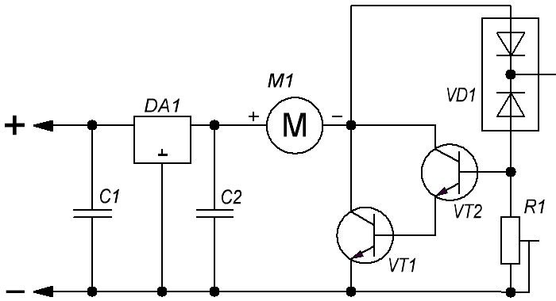

Умный вентилятор
Вход схемы (рис. 1) подключается к выпрямительному мосту блока питания. Вентилятор включается при изменении температуры корпуса диодной сборки VD1. Диодная сборка закрепляется к радитору блока питания. Для этого имеется отверстие для крепежа под винт М3.

Настройка устройства сводится к изменению сопротивления подстроечного резистора при выбранной температуре так, чтобы вентилятор начал вращаться. При повышении температуры, частота вращения будет увеличиваться.
Таблица 1
| Обозначение | Наименование | Номинал | Кол-во | Примечание |
|---|---|---|---|---|
| С1, C2 | Конденсатор | 0,1 мкФ |
1 | |
| DA1 | Микросхема | LM7815 | 1 | стабилизатор напряжения |
| М1 | Электромотор вентилятора | 1 | ||
| R1 | Резистор подстроечный | 100 кОм | 1 | |
| VD1 | Диодная сборка | PSR10C40CT | 1 | |
| VT1 | Транзистор биполярный | КТ815В | 1 | |
| VT2 | Транзистор биполярный | BC547 | 1 |